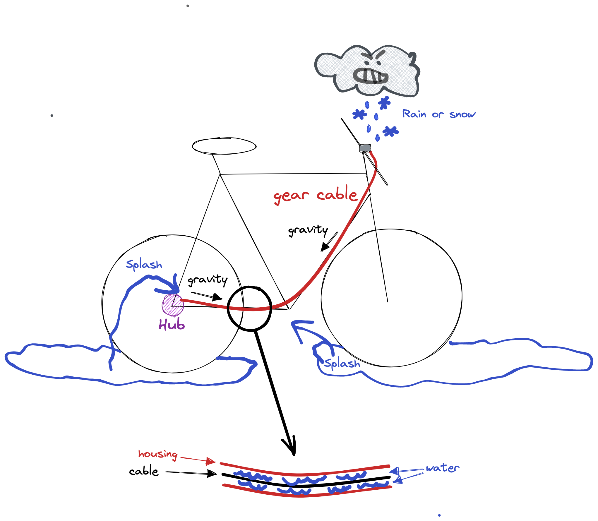
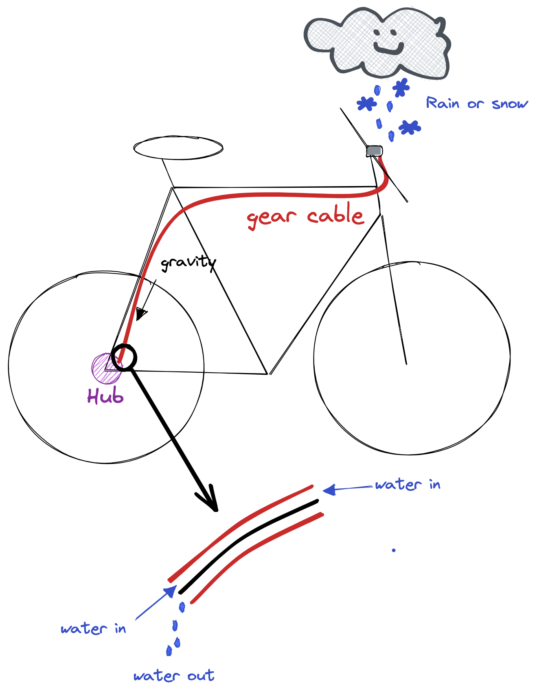
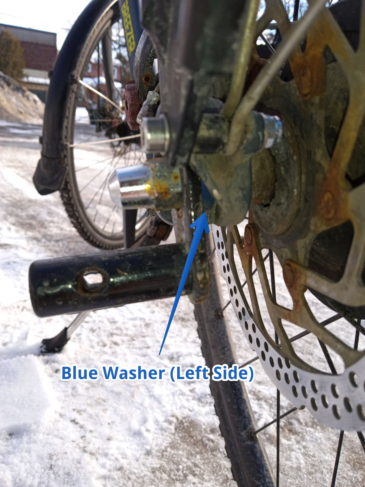
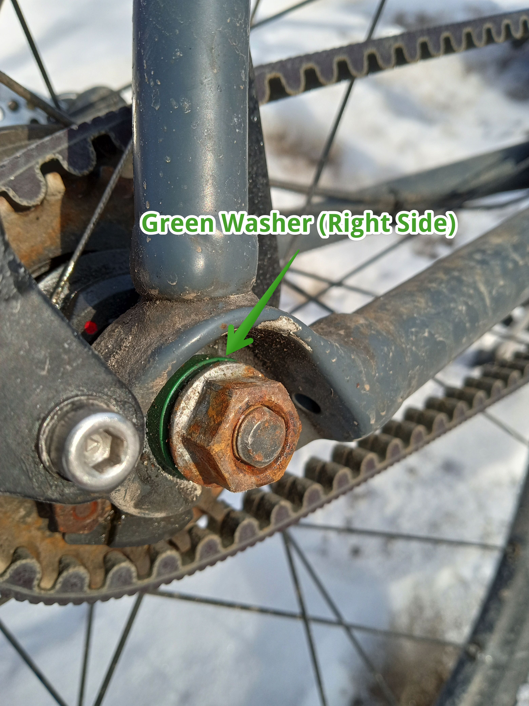
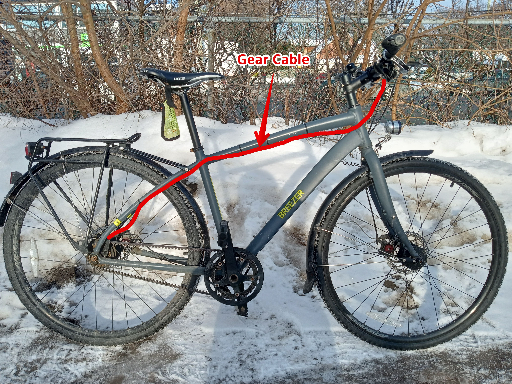
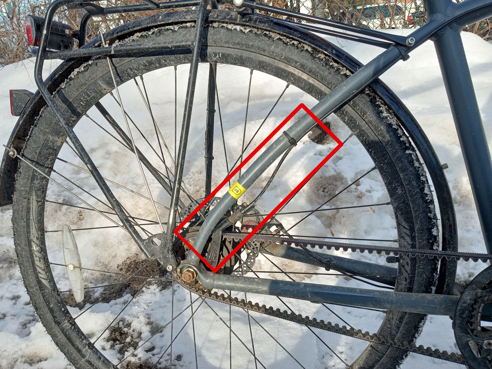
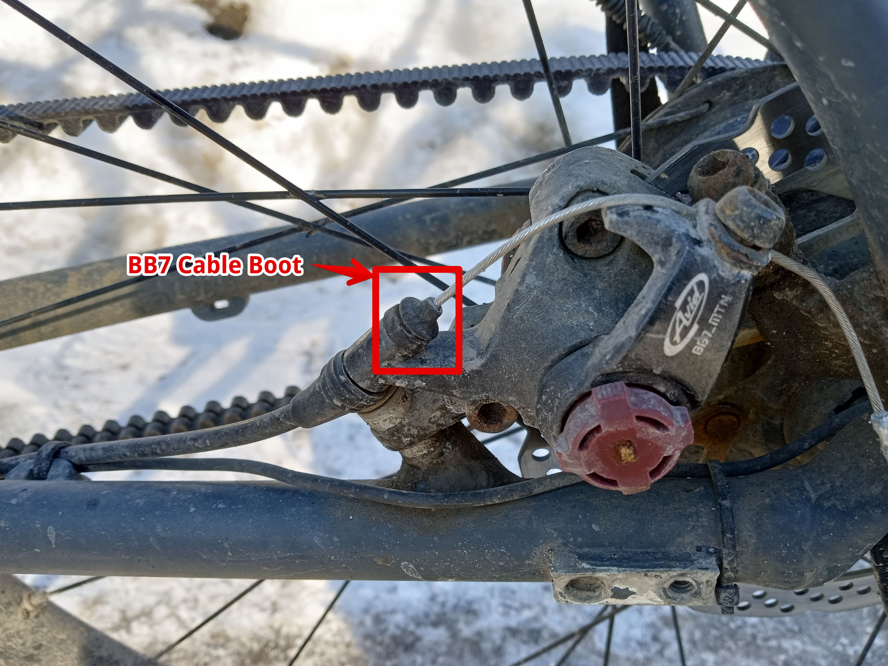

Most winter cyclists have probably gone through this at least once. You pull your brake levers or try to shift gears but cables are not responding and won't move. There are a few possible causes, but in my experience a stuck cable is usually a symptom of water that managed to get trapped inside of the cable housing.
La plupart des cyclistes d'hiver ont sûrement vécu ça au moins une fois. Vous tirez sur vos leviers de frein ou essayez de changer de vitesse, mais les câbles ne répondent pas et refusent de bouger. Il y a quelques causes possibles, mais d'après mon expérience, un câble bloqué est généralement le symptôme d'eau qui a réussi à se coincer dans la gaine du câble.
This section will describe my experience with this situation and how one can minimize this problem with the equipment I am familiar with.
Cette section décrit mon expérience avec ce problème et comment on peut le réduire au minimum avec l'équipement que je connais.
TL; DR: Water in cables is the winter cyclist's #1 enemy. Route your cables with downwards slopes and use cable boots to minimize issues.
En bref : l'eau dans les câbles est l'ennemi n° 1 du cycliste d'hiver. Faites passer vos câbles en pente descendante et utilisez des soufflets de câble pour limiter les problèmes.
I ride a bike equipped with a Shimano Alfine 8-speed internal hub. The first year I had this bike, the hub operated perfectly until the first cold spells happened. Typically, the symptom was that the gears wouldn't shift well or at all. On this hub, downshifting means pulling the cable away from the hub by applying strength on the lever, and upshifting means giving some slack to the cable so that the hub springs might pull it back towards the hub.
Mon vélo est équipé d'un moyeu à vitesses intégrées Shimano Alfine à 8 vitesses. La première année, le moyeu a fonctionné parfaitement jusqu'aux premières vagues de froid. Le symptôme typique : les vitesses passaient mal, ou pas du tout. Sur ce moyeu, rétrograder consiste à tirer le câble en éloignant du moyeu en forçant sur le levier, et passer à une vitesse supérieure consiste à relâcher le câble pour que les ressorts du moyeu le ramènent vers lui.
Sometimes downshifting was possible by pulling very hard on the lever. However, once I had downshifted this way I could not shift back up because the hub springs were simply not powerful enough to move the cable back. On a few occasions, I found myself having to ride on the 1st or 2nd gear the whole commute, which was not great. This even sometimes combined with non-functional hydraulic brakes, which really set the stage for a tough ride!
Parfois, je pouvais rétrograder en tirant très fort sur le levier. Mais une fois rétrogradé de cette façon, impossible de remonter les vitesses : les ressorts du moyeu n'étaient tout simplement pas assez puissants pour ramener le câble. À quelques reprises, j'ai dû faire tout mon trajet en 1re ou en 2e vitesse, ce qui n'était pas idéal. Ça s'est même parfois combiné à des freins hydrauliques qui ne fonctionnaient plus, de quoi rendre la sortie vraiment pénible !
Problems with shifting seemed to happened more frequently when below-freezing temperature followed above-freezing ones. Bringing the bike inside a heated area would fix the problem temporarily (say for the first 10 minutes of riding), but then the shifter would start being hard to use again.
Les problèmes de changement de vitesse semblaient plus fréquents quand des températures sous zéro suivaient des températures au-dessus de zéro. Rentrer le vélo dans un endroit chauffé réglait le problème temporairement (disons pour les 10 premières minutes de route), mais ensuite, la manette redevenait difficile à utiliser.
When reporting the issue to the LBS, I was given common advices such as lubricating the cable. The shop tried that but it didn't really help much with the situation.
Quand j'ai signalé le problème à ma boutique de vélo, on m'a donné les conseils habituels, comme lubrifier le câble. La boutique l'a essayé, mais ça n'a pas vraiment aidé.
The Shimano hub uses full-length cable housing running from the shifter to the hub. Some research led me to believe that the situation was caused by water entering the cable and getting trapped. The way my cable was routed, there was a low spot where water might accumulate. Once the water was in there, it would freeze and block the operation of the cable until it was manually removed.
Le moyeu Shimano utilise une gaine sur toute la longueur, de la manette jusqu'au moyeu. Quelques recherches m'ont amené à croire que le problème venait de l'eau qui entrait dans le câble et y restait prisonnière. Avec le tracé de mon câble, il y avait un point bas où l'eau pouvait s'accumuler. Une fois l'eau à l'intérieur, elle gelait et bloquait le câble jusqu'à ce qu'on la retire à la main.
This made sense with the symptoms I was getting. The bike would operate well in the summer or in the first 10 minutes after taking it outdoors, but not when left in the cold for a long time. The LBS fixed the immediate problem once by removing the cable and blowing the water away from the housing, but it occurred again some time later.
Ça concordait avec mes symptômes. Le vélo fonctionnait bien l'été ou pendant les 10 premières minutes après l'avoir sorti, mais pas quand il restait longtemps au froid. La boutique a réglé le problème une fois en retirant le câble et en soufflant l'eau hors de la gaine, mais c'est revenu quelque temps plus tard.
The solution to the water issue was to convert the cable routing from what is shown in the left-hand side picture below into the situation on the right-hand side.
La solution au problème d'eau a été de modifier le tracé du câble : passer de ce qu'on voit sur l'image de gauche ci-dessous à la situation de droite.
|
 |
 continuous downwards slope! Aucune accumulation d'eau avec une pente descendante continue ! |
On the picture on the left, water that is splashing from the street or incoming from above and entering the cable housing gets pulled by gravity towards a low spot somewhere along the horizontal chain stay at the bottom of the frame.
Sur l'image de gauche, l'eau qui éclabousse de la rue ou qui arrive d'en haut et entre dans la gaine est attirée par la gravité vers un point bas, quelque part le long de la base arrière horizontale, au bas du cadre.
On the right, however, the gear cable has been routed such that water that might find itself entering the housing will naturally flow back out.
À droite, par contre, le câble de vitesses passe de telle sorte que l'eau qui pourrait entrer dans la gaine en ressort naturellement.
While the previous illustrations make sense in theory, how does one make the necessary modifications in practice? It turns out that with the Shimano Alfine 8 hub, this is a relatively simple operation that can be done with basic mechanical skills or with the help of a LBS. This solution was proposed by the head mechanic of Dumoulin Bicyclettes, the LBS where I had bought my bike.
Les illustrations précédentes sont logiques en théorie, mais comment fait-on les modifications nécessaires en pratique ? Il se trouve qu'avec le moyeu Shimano Alfine 8, c'est une opération relativement simple, à la portée de quiconque a des notions de mécanique de base, ou avec l'aide d'une boutique de vélo. Cette solution m'a été proposée par le mécanicien en chef de Dumoulin Bicyclettes, la boutique où j'avais acheté mon vélo.
The Alfine 8 hub comes with blue and green non-turn washers that hold it at a fixed angle and keep it from spinning with respect to the frame. Normally, the blue washer is installed on the right-hand side and the green one on the left. This configures the hub such that the arm that receives the gear cable is horizontally aligned with the chain stay.
Le moyeu Alfine 8 est fourni avec des rondelles antirotation bleue et verte qui le maintiennent à un angle fixe et l'empêchent de tourner par rapport au cadre. Normalement, la rondelle bleue s'installe du côté droit et la verte du côté gauche. Le moyeu est alors orienté de façon à ce que le bras qui reçoit le câble de vitesses soit aligné horizontalement avec la base arrière.
Interestingly, by swapping the two washers, it is possible to install the hub such that the arm is aligned almost exactly with the seat stay instead!
Fait intéressant, en inversant les deux rondelles, on peut installer le moyeu de façon à ce que le bras soit plutôt aligné presque exactement avec le hauban !
|
 |
 |
I don't know if that is a purposeful design from Shimano, but this neat trick makes a very easy fix to this common problem. Either way, I must thank Shimano and my mechanic who suggested the swap!
Je ne sais pas si Shimano l'a conçu ainsi exprès, mais cette astuce ingénieuse règle très facilement ce problème courant. Dans tous les cas, merci à Shimano et à mon mécanicien, qui m'a suggéré l'inversion !
The last part of the modification is simply to re-route the gear cable along the seat stay and the top tube. Equipped with those instructions, any LBS can easily make that fix. It might make the bike slightly less pretty and the cable might have to be attached with tie-wraps but hey, you'll have functioning gears 365 days a year. Well worth it if you ask me!
La dernière étape consiste simplement à faire passer le câble de vitesses le long du hauban et du tube horizontal. Avec ces instructions, n'importe quelle boutique de vélo peut facilement faire la modification. Le vélo sera peut-être un peu moins joli et il faudra peut-être fixer le câble avec des attaches autobloquantes (tie-wraps), mais au moins, vos vitesses fonctionneront 365 jours par année. Ça en vaut largement la peine, si vous voulez mon avis !
Now, you may wonder if the new cable route might not create a low spot near the lever instead. In my case, the cable goes horizontally or might have a slight low point around where it leaves the frame to reach the lever. In practice I found out that it does not create any problem. I believe that most of the water enters from the lower end of the cable near the hub and that water entering from above is minimal.
Vous vous demandez peut-être si le nouveau tracé ne crée pas plutôt un point bas près du levier. Dans mon cas, le câble est horizontal, ou a peut-être un léger point bas là où il quitte le cadre pour rejoindre le levier. En pratique, ça ne cause aucun problème. Je crois que la majeure partie de l'eau entre par l'extrémité inférieure du câble, près du moyeu, et que l'eau qui entre par le haut est minime.


Regarding brake cables, frozen water stuck inside may prevent brakes from being pulled and cause safety hazards. In practice, I have found that water inside of brake cables creates less problems than with gear cables. Usually, when brake cables are stuck, pumping the brakes really hard a few times gets them unstuck. There is no "giving slack" movement such as with gear cables that can be impeded by frozen water, such that you always have your full strength to get them unstuck.
Dans les câbles de frein, l'eau gelée peut empêcher d'actionner les freins et poser un risque pour la sécurité. En pratique, j'ai constaté que l'eau dans les câbles de frein cause moins de problèmes que dans les câbles de vitesses. Habituellement, quand les câbles de frein sont bloqués, pomper les freins très fort quelques fois suffit à les débloquer. Il n'y a pas de mouvement de « relâchement » comme avec les câbles de vitesses, que l'eau gelée pourrait empêcher : on a donc toujours toute sa force pour les débloquer.
Regarding parts, I use Avid BB7 disc brakes which have full-length housing and a cable boot at the end. Full disclaimer: I selected those over the similar and slightly cheaper BB5 just because of the boot which the BB5 lack. I had such a bad experience with my gear cable that I wanted to make sure it would not repeat with the brakes.
Côté pièces, j'utilise des freins à disque Avid BB7, qui ont une gaine sur toute la longueur et un soufflet au bout du câble. Pour être honnête, je les ai choisis plutôt que les BB5, semblables et un peu moins chers, uniquement à cause de ce soufflet, que les BB5 n'ont pas. J'avais eu une si mauvaise expérience avec mon câble de vitesses que je voulais être sûr que ça ne se répète pas avec les freins.
Unfortunatly, with disc brakes there is no option to change routing angles and on my bike the rear cable has a low spot near the caliper, because it routes the cable along the chain stay. The rear brake cable is visible on the hub close-up picture on the far side of the rear wheel.
Malheureusement, avec des freins à disque, on ne peut pas changer l'angle du tracé, et sur mon vélo, le câble arrière a un point bas près de l'étrier parce qu'il longe la base arrière. On voit le câble du frein arrière sur la photo rapprochée du moyeu, de l'autre côté de la roue arrière.
Nevertheless, the cable boot seems to be doing a good enough job of keeping water away.
Le soufflet semble tout de même faire un assez bon travail pour garder l'eau à l'écart.

In summary, with the BB7 and the boot properly positioned I rarely get issues with my cables except in extremely cold weather such as below -20 ℃. In that case I suspect some other issue at play, maybe cable stiffness due to the cold, because cables operate fine if the next day is milder even though below freezing.
En résumé, avec les BB7 et un soufflet bien positionné, j'ai rarement des problèmes de câbles, sauf par froid extrême, sous -20 ℃ par exemple. Dans ce cas, je soupçonne une autre cause, peut-être la raideur des câbles due au froid, parce qu'ils fonctionnent bien si le lendemain est plus doux, même sous zéro.
One last note about the cable boot: on the BB7 it does not look strongly attached and might sometimes move out of place. Inspect it regularly to make sure it does its job!
Un dernier mot sur le soufflet : sur les BB7, il ne semble pas très bien fixé et peut parfois se déplacer. Inspectez-le régulièrement pour vous assurer qu'il fait son travail !
When water in cables is suspected, it might be tempting to move the bike inside in the hope that it will "warm up" and dry. In this situation, any "fix" that is introduced by heating the bike will be temporary and revert itself once the bike is ridden outside for a few minutes when the water freezes back.
Quand on soupçonne de l'eau dans les câbles, on peut être tenté de rentrer le vélo en espérant qu'il se « réchauffe » et sèche. Dans ce cas, toute « réparation » obtenue en réchauffant le vélo sera temporaire et disparaîtra après quelques minutes de route dehors, quand l'eau regèlera.
Sometimes, by hanging the bicycle vertically in a heated location (using a wall mount in the house for example), water that accumulated in the cable that might otherwise stay frozen if the bike was stored outside will melt and drop during the night. The bike will then be great to use on the next day! I once had a colleague who was commuting with the same bike as I was. Frustratingly, I would experience water in the cables and he wouldn't. I was puzzled by this until I realized that he was storing his bike vertically inside his flat while I was leaving it in an unheated location. Although I never tried it myself, I gave this trick to a few people and it seems to help them with this issue.
Parfois, en suspendant le vélo à la verticale dans un endroit chauffé (sur un support mural dans la maison, par exemple), l'eau accumulée dans le câble, qui resterait gelée si le vélo était rangé dehors, fond et s'égoutte pendant la nuit. Le vélo est alors parfait le lendemain ! J'ai déjà eu un collègue qui faisait ses trajets avec le même vélo que moi. Frustrant : j'avais de l'eau dans les câbles, et lui non. Ça m'intriguait, jusqu'à ce que je réalise qu'il rangeait son vélo à la verticale dans son appartement, alors que je laissais le mien dans un endroit non chauffé. Je ne l'ai jamais essayé moi-même, mais j'ai donné le truc à quelques personnes et ça semble les aider.
Regarding the option to blow the water out: it will work until water reenters, but you're not going to do this 10 times per winter. Besides, once the cable is pulled out of the housing, it might not be possible to place it back if the ending is too worn out and you'll need to replace it. Please only take your cable out if you have a replacement handy, or you'll have to skip on biking for the next days until you replace it!
Quant à souffler l'eau hors de la gaine : ça fonctionne jusqu'à ce que l'eau revienne, mais vous n'allez pas faire ça 10 fois par hiver. En plus, une fois le câble sorti de la gaine, il se peut qu'on ne puisse pas le remettre si le bout est trop usé, et il faudra le remplacer. Ne sortez votre câble que si vous avez un câble de rechange sous la main, sinon vous devrez vous passer de vélo pendant quelques jours, le temps de le remplacer !
This section described my experience with the Shimano Alfine 8 internal gear hub and Avid BB7 brakes using full-length housing cables. Full-length housing is good in general because it provides additional protection to your cables but it is not often installed in a winter-proof way. I find that with these two parts properly installed with downwards slopes or cable boots, I have a minimum amount of issues with my cables.
Cette section a décrit mon expérience avec le moyeu à vitesses intégrées Shimano Alfine 8 et les freins Avid BB7, qui utilisent des gaines sur toute la longueur. Une gaine complète est une bonne chose en général, parce qu'elle protège davantage les câbles, mais elle est rarement installée de façon à résister à l'hiver. Je trouve qu'avec ces deux pièces bien installées, avec des pentes descendantes ou des soufflets, j'ai un minimum de problèmes de câbles.
There is no need for lubricating or any other maintenance tasks with such equipment and the bike is usable 365 days a year. I do not have experience with other internal hubs or mechanical disc brakes but the main idea described here should apply to other parts. If suspecting water in your cables, inspect how the routing of the cable is done on your bike. In case this is the issue, ask your LBS for a fix to make sure the slopes are downwards and there is no low point.
Avec cet équipement, pas besoin de lubrifier ni de faire d'autre entretien, et le vélo est utilisable 365 jours par année. Je n'ai pas d'expérience avec d'autres moyeux à vitesses intégrées ou freins à disque mécaniques, mais l'idée principale décrite ici devrait s'appliquer à d'autres pièces. Si vous soupçonnez de l'eau dans vos câbles, examinez leur tracé sur votre vélo. Si c'est le problème, demandez à votre boutique de vélo de le corriger pour que les pentes soient descendantes et qu'il n'y ait aucun point bas.